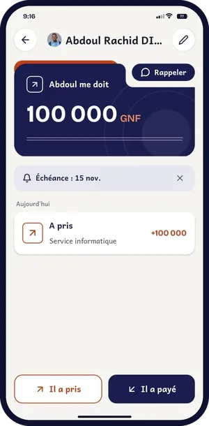
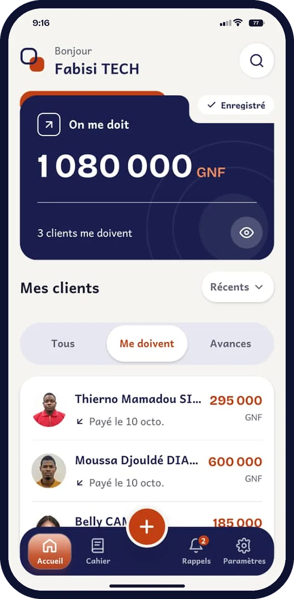
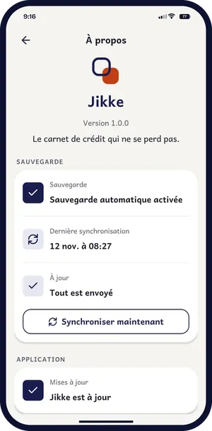
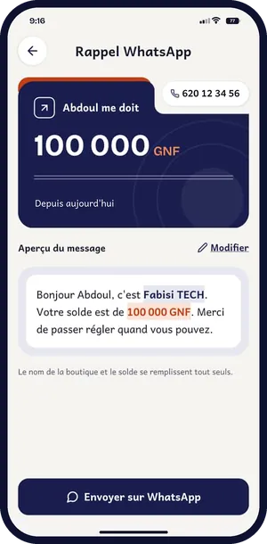
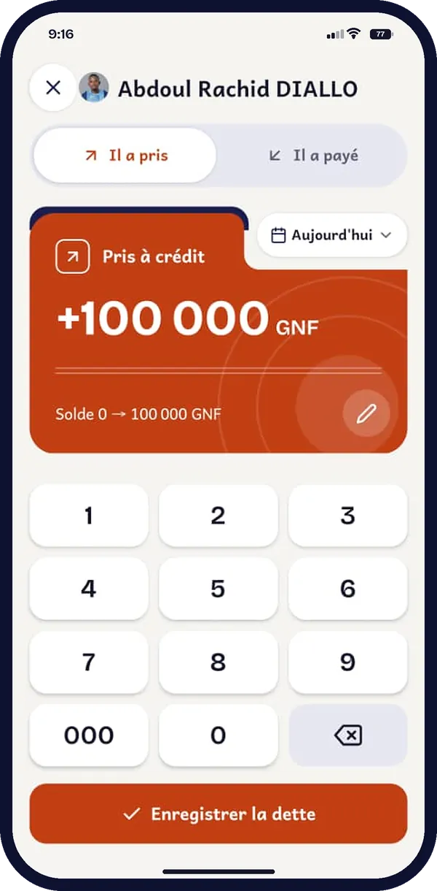
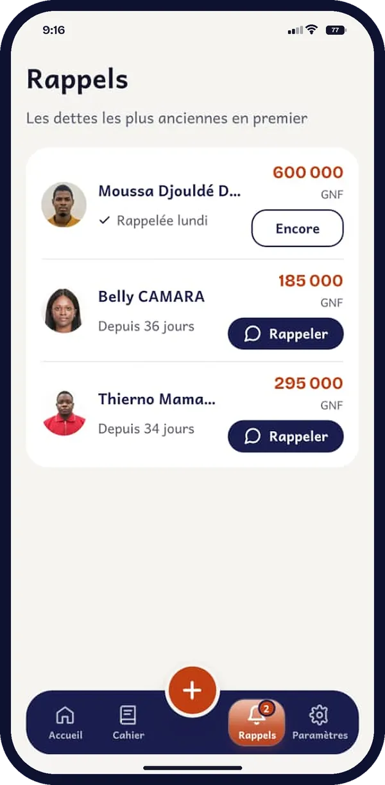

Sachez qui vous doit
Le solde de chaque client, et le total qu'on vous doit, d'un coup d'œil.

Notez les dettes et les paiements de vos clients, même sans internet.
Écrivez-nous sur WhatsApp, on vous explique tout.

Pourquoi Jikke
Le solde de chaque client, et le total qu'on vous doit, d'un coup d'œil.

Vous notez tout, même sans réseau. La sauvegarde se fait toute seule dès qu'il y a du réseau.

Au bon moment, Jikke prépare le message WhatsApp avec le bon montant.

Comment ça marche

En vidéo
La vidéo se charge seulement si vous appuyez dessus.
Environ 0,7 Mo
Sécurité et confiance

Questions fréquentes
Oui, Jikke est gratuit pendant son lancement. Si cela change un jour, vous serez prévenu à l'avance, et votre carnet restera toujours à vous.
Non, pas pour noter. Il faut du réseau de temps en temps pour sauvegarder votre carnet. La sauvegarde se fait toute seule.
Votre carnet est sauvegardé. Vous le récupérez sur un nouveau téléphone.
Non. Seule la commerçante ou le commerçant utilise Jikke. Vos clients reçoivent juste les rappels sur WhatsApp, si vous le souhaitez.
Sur les téléphones Android. Jikke est léger, pensé pour les téléphones ordinaires.
En français. Le soussou, le malinké et le pular arrivent bientôt.
Jikke est en test avec un petit groupe de commerçants. Écrivez-nous sur WhatsApp au +224 624 01 30 03 pour rejoindre le pilote.
Vous tenez un carnet de crédit ? Essayez Jikke parmi les premiers.
Rejoindre le pilote